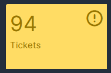
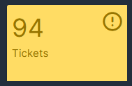

Contexte du Projet
GLPI (Gestionnaire Libre de Parc Informatique) est devenu le projet fil rouge de mon alternance au Pôle Universitaire de Vichy. Cette solution open-source centralise la gestion du parc informatique et le système de ticketing.
Le défi principal était de moderniser la gestion des équipements informatiques et d'améliorer le processus de support technique pour les 3000 utilisateurs du Pôle.
Objectifs du Projet
- Inventaire automatisé des équipements réseau
- Système de tickets intégré avec collecteur mail
- Supervision SNMP des imprimantes et bornes WiFi
- Règles d'affectation intelligentes par localisation
- Filtrage logiciel et gestion des licences


Configuration SNMP - Supervision Automatique
Mise en Place du Monitoring SNMP
J'ai récemment configuré le monitoring SNMP pour que les imprimantes remontent automatiquement le nombre de pages imprimées chaque jour. Cette fonctionnalité permet un suivi précis de la consommation et une maintenance préventive.
Configuration Technique
- Protocole SNMP v2c activé sur les imprimantes
- Communauté SNMP sécurisée pour l'accès en lecture
- Collecte quotidienne des métriques d'impression
- Alertes automatiques en cas de problème d'impression
Cette configuration s'étendra bientôt aux bornes WiFi pour un monitoring complet de l'infrastructure réseau.


Système de Tickets Mail
Configuration du Collecteur Mail
J'ai entièrement configuré le système de tickets avec collecteur mail pour automatiser la gestion des demandes de support. Les utilisateurs peuvent maintenant créer des tickets directement par email.
Workflow des Tickets
Ouverture
Email automatiquement converti en ticket
Suivi
Notifications automatiques par email
Fermeture
Confirmation et archivage automatique

Règles d'Affectation & Filtrage
Configuration des Règles Intelligentes
Mise en place de règles d'affectation automatiques basées sur la localisation des équipements et des utilisateurs pour optimiser la gestion du parc.
Affectation par Lieu
PC automatiquement affectés selon leur localisation physique (bureau, salle de cours, etc.)
Filtrage Logiciel
Règles de filtrage des logiciels autorisés selon le type d'équipement et l'utilisateur
Gestion des Licences
Suivi automatique des licences logicielles et alertes de renouvellement
 

Compétences Développées
Techniques
Fonctionnelles
Évolution Continue
"Il y a toujours des trucs à faire sur GLPI. C'est un projet qui évolue constamment selon les besoins du service et les demandes des utilisateurs."
Ce projet fil rouge me permet de développer continuellement mes compétences en administration système et en gestion de parc informatique. Chaque nouvelle fonctionnalité ajoutée améliore l'efficacité du service informatique du Pôle Universitaire.